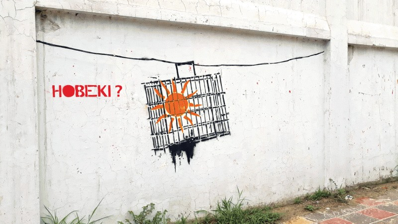
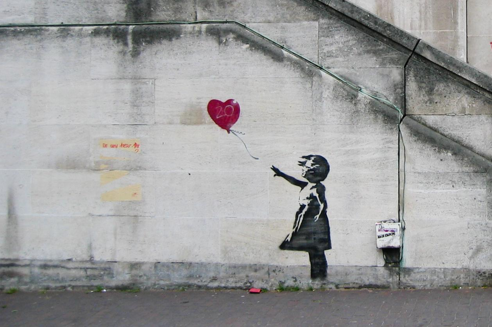
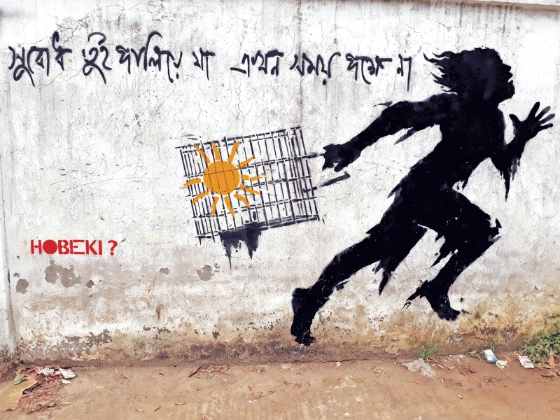

As an average youth of Bangladesh, my life is probably an adequate representative of the rebellious yet vegetative state the youth of Bangladesh are in right now. We see and understand everything, but we hesitate. We hesitate to speak about it. We hesitate because we fear the consequences, but mostly we hesitate because we don't believe it will make a difference. It is an easy and effective excuse for us to stay silent.
In 2017 however, an anomaly named Subodh emerged in the streets of Dhaka.
Subodh is an almost ragged young man. He carries a head full of unkempt hair and a face full of beard that symbolize his unruly nature. A man who was born on the streets of Dhaka. Through the injustice and unfairness this city projects, a young man continues his journey to survive. That is Subodh.

Subodh on the walls of Dhaka — created by the anonymous artist Hobeki.
In a more grounded sense, Subodh is the protagonist of a series of street art and graffiti done by an anonymous artist called "Hobeki". Subodh is a fictional character that showcases the struggles of a common man in this country. His struggles are shown visually through shabby clothes, scars, and a rather homeless appearance. All of the Subodh graffiti artworks are done with stencils and sprayed in a black-and-white color scheme. The colorless scheme supports the notion of despair and hopelessness. The only thing that has any color in these artworks is the sun, which Subodh often holds in his hands. The sun can be interpreted as a symbol of freedom, hope, life. This makes the sun ever more important for someone like Subodh, who is constantly searching for that freedom. But here is the problem: the sun is always caged. It is confined within a cage of sorts, symbolizing the nature of the so-called freedom we have.
How did Subodh come to fruition?
To understand that, we have to go back a little and understand the concept of modern graffiti culture.
Graffiti has made its place as one of the most impactful forms of contemporary art in recent years. History suggests that graffiti has always been a form of expressing the defiant mindset of the general people. One of the first examples of modern graffiti was a rather humorous doodle titled "Kilroy was here," which became prominent during World War 2 as American soldiers started using it to mark their presence. A much more modern approach to street art can be seen in the works of Blek Le Rat, Jean-Michel Basquiat, and Banksy. Blek Le Rat in particular introduced the world to the power of stencils and sprays. This led to the emergence of a new generation of graffiti artists who adopted stencils as their primary technique, with Banksy being one of the most notable figures.

Banksy's "Girl with the Balloon" — one of the most iconic pieces of anti-establishment street art.
Banksy is undoubtedly the most prominent street artist out there. He is an anonymous artist who made his name known globally through his out-of-the-box artworks that comment on societal and political themes people often don't speak about. His works like "Girl with the Balloon" and "Flower Thrower" showcase the need for peace and freedom. Banksy speaks against oppression, inequality, discrimination. His works are often labeled as anti-establishment and anti-authoritarian, as they always challenge the societal structure and hierarchy. One of the main reasons Banksy has become so socially relevant is his anonymous and provocative nature. The artist not being visible to the public eye makes his artworks all the more interesting to look at.
Graffiti in Bangladesh
Wall art has been present in Bangladeshi culture for a long time. But street art or graffiti as we know it found its inception rather recently. During the language movement and anti-Pakistan government protests in the last century, a lot of street art circulated in the streets of Bangladesh as an expression of anger and rebellion. After liberation, much street art could be seen during the 90s Anti-Authoritarian Movement.
In recent times, Subodh has been one of the very few street artworks that has been able to generate some sort of buzz. Similar to Banksy, Hobeki maintains an anonymous persona. It has become sort of a trademark for him. That is why a lot of people call him "Bangla's Banksy" or "Banksy of Bangladesh".
However, even though there are some striking resemblances between Banksy's artworks and Subodh, it would be totally unfair to say that they are the same. Sure, all of these artworks come from a place of suffering. But they are fundamentally different. Banksy asks for a wind of change. He is not satisfied with the way things are and he wants it to change. He is hopeful that it will change. He asks for peace and freedom. Banksy's art resembles hope.
Subodh, on the other hand, is just an expression. An outcry. Subodh a lot of the time doesn't have any hope about his situation at all. Sometimes someone tells Subodh:

"Run away, there's nothing for you" — the most haunting of Hobeki's Subodh pieces.
This sends a strong message. A message that this country, this nation, this society hasn't been able to give Subodh anything but pain. It is a harsh statement. But it is one that encompasses the despair and anguish the youth of this country feel on a constant basis. There is a huge part of the young generation that is searching for a way to leave. Not because they hate this country, but because they feel hopeless here. A voice similar to the one telling Subodh also tells them that there's nothing for them here. The voice tells them their misery won't end if they stay. And maybe the voice is right. Hard to know.
That begs a question. Where is Subodh? In this situation when the hopelessness among youth has reached its peak, where is the symbol of struggle? Makes someone like me ask:
"Subodh, are you alive?"